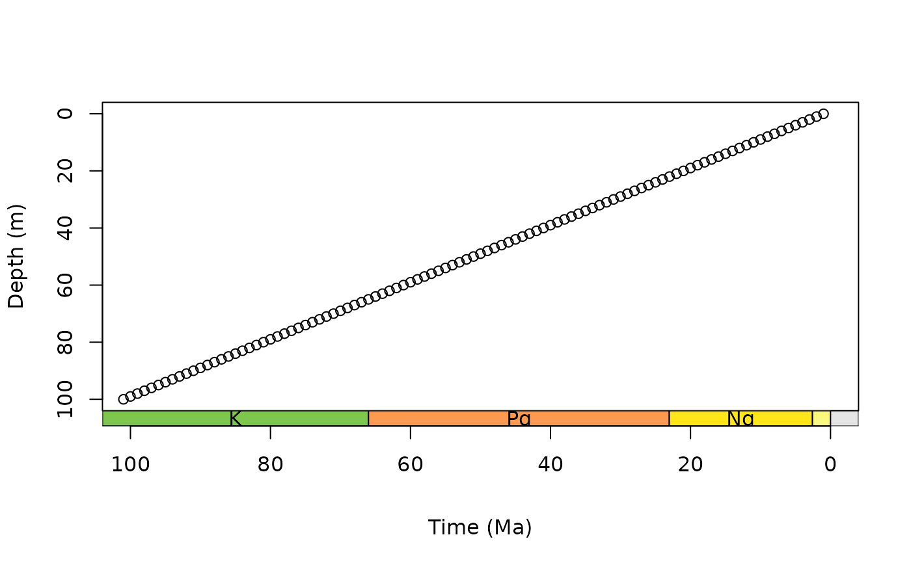
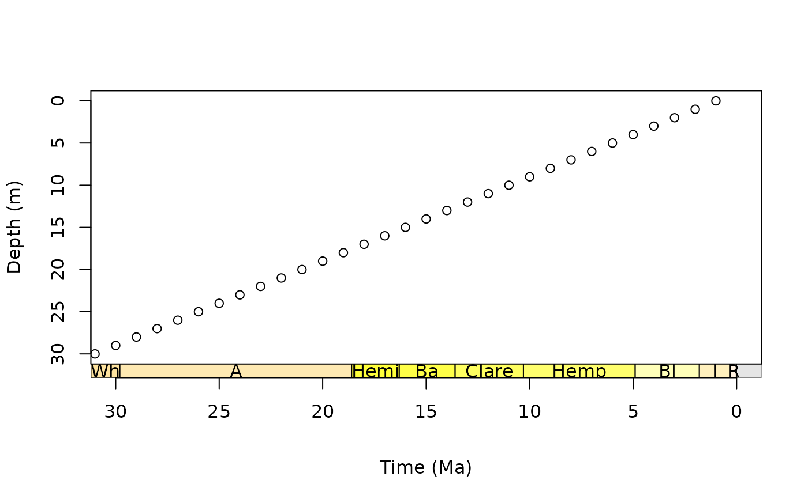
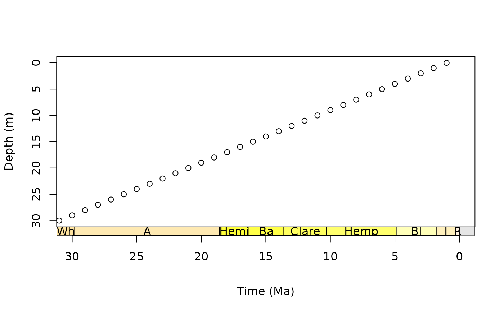
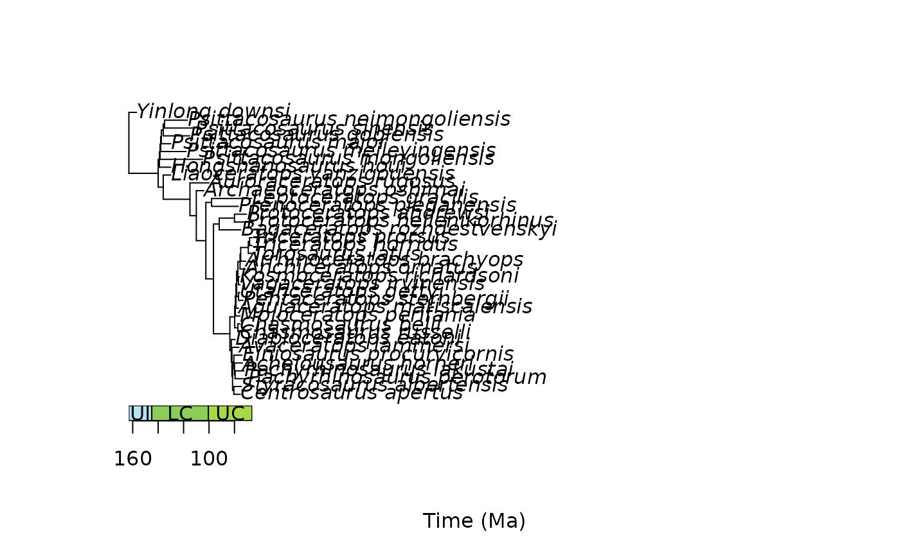
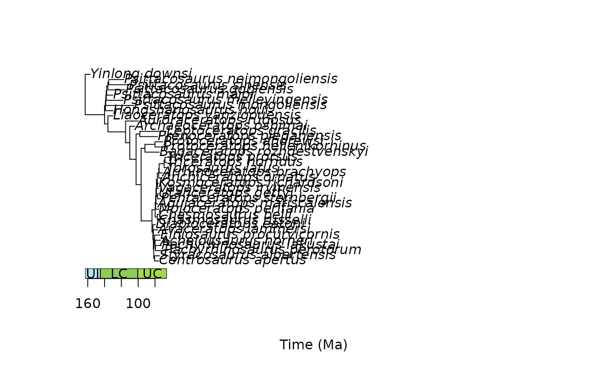

axis_geo behaves similarly to axis in that it
adds an axis to the specified side of a base R plot. The main difference is
that it also adds a geological timescale between the plot and the axis. The
default scale includes international epochs from the the Geological Timescale
2020 (GTS2020). However, international stages, periods, eras,
and eons are also available. Interval data hosted by
Macrostrat are also available (see
time_bins). A custom interval dataset can also be used (see
Details below). The appearance of the axis is highly customisable (see Usage
below), with the intent that plots will be publication-ready.
Usage
axis_geo(
side = 1,
intervals = "epoch",
height = 0.05,
fill = NULL,
lab = TRUE,
lab_col = NULL,
lab_size = 1,
rot = 0,
abbr = TRUE,
center_end_labels = TRUE,
autofit = FALSE,
skip = c("Quaternary", "Holocene", "Late Pleistocene"),
bord_col = "black",
lty = par("lty"),
lwd = par("lwd"),
bkgd = "grey90",
neg = FALSE,
exact = FALSE,
round = FALSE,
tick_at = NULL,
tick_labels = TRUE,
title = NULL,
phylo = FALSE,
root.time = NULL,
...
)
axis_geo_phylo(...)Arguments
- side
integer. Which side to add the axis to (1: bottom, the default;2: left;3: top;4: right).- intervals
The interval information to use to plot the axis: either A) a
characterstring indicating a rank of intervals from the built-inGTS2020, B) acharacterstring indicating adata.framehosted by Macrostrat (seetime_bins), or C) a customdata.frameof time interval boundaries (see Details). A list of strings or data.frames can be supplied to add multiple time scales to the same side of the plot (see Details).- height
numeric. The relative height (or width ifsideis2or4) of the scale. This is relative to the height (ifsideis1or3) or width (ifsideis2or4) of the plot.- fill
character. The fill colour of the boxes. The default is to use thecolourorcolorcolumn included inintervals. If a custom dataset is provided withintervalswithout acolourorcolorcolumn and without specifyingfill, a greyscale will be used. Custom fill colours can be provided with this option (overriding thecolourorcolorcolumn) and will be recycled if/as necessary.- lab
logical. Should interval labels be included?- lab_col
character. The colour of the labels. The default is to use thefontorlab_colorcolumn included inintervals. If a custom dataset is provided withintervalswithout afontorlab_colorcolumn and without specifyinglab_col, all labels will be black. Custom label colours can be provided with this option (overriding thefontorlab_colorcolumn) and will be recycled if/as necessary.- lab_size
numeric. The size of the labels (seecexingraphics parameters).- rot
numeric. The amount of counter-clockwise rotation to add to the labels (in degrees). Note, labels for axes added to the left or right sides are already rotated 90 degrees.- abbr
logical. Should labels be abbreviated? This only works if the data has anabbrcolumn, otherwise thenamecolumn will be used regardless of this setting.- center_end_labels
logical. Should labels be centered within the visible range of intervals at the ends of the axis?- autofit
logical. Should labels be automatically resized to fit their interval boxes? IfTRUE,lab_sizewill be used as the maximum possible size of the labels. IfFALSE(the default),lab_sizewill be used as the size for all labels.- skip
A
charactervector of interval names indicating which intervals should not be labeled. IfabbrisTRUE, this can also include interval abbreviations. Quaternary, Holocene, and Late Pleistocene are skipped by default. Set to NULL if this is not desired.- bord_col
character. The border colour of the interval boxes.- lty
character. Line type (seeltyingraphics parameters). This value (or the last value if this is a list) will also be passed toaxis.- lwd
numeric. Line width (seelwdingraphics parameters).- bkgd
character. The colour of the background of the scale when no intervals are being shown.- neg
logical. Set this toTRUEif your x-axis is using negative values. If the entire axis is already negative, this will be set toTRUEfor you.- exact
logical. Set this toTRUEif you want axis tick marks and numeric tick labels placed at the interval boundaries. IfTRUE, this overridestick_atandtick_labels.- round
integer. Number of decimal places to which exact axis labels should be rounded (usinground). If no value is specified, the exact values will be used. Trailing zeros are always removed.tick_atandtick_labelscan be used to include labels with trailing zeros.- tick_at
A
numericvector specifying custom points at which tick marks are to be drawn on the axis. If specified, this is passed directly toaxis. IfphyloisTRUE, these values are converted as necessary for the phylogenetic axis limits. If this is set toNULL(the default) tick mark locations are computed automatically (seeaxTicks).- tick_labels
Either a) a
logicalvalue specifying whether (numerical) annotations should be made at the tick marks specified bytick_at, or b) a customcharacterorexpressionvector of labels to be placed at the tick marks. Iftick_atis specified, this argument is passed directly toaxis.- title
character. An axis title to be added outside of the specified axis. This is passed directly tomtext. If this is set toNULL(the default), no title will be added.- phylo
logical. Is the base plot a phylogeny generated byplot.phylo,plotTree,plotSimmap, etc?- root.time
numeric. IfphyloisTRUE, this is the time assigned to the root node of the tree. By default, this is taken from theroot.timeelement of the plotted tree.- ...
Further arguments that are passed directly to
axisandmtext.
Value
No return value. Function is used for its side effect, which is to add an axis of the geological timescale to an already existing plot.
Details
If a custom data.frame is provided (with intervals), it should
consist of at least 3 columns of data. See GTS2020 for an
example.
The
interval_namecolumn (nameis also allowed) lists the names of each time interval. These will be used as labels if no abbreviations are provided.The
max_macolumn (max_ageis also allowed) lists the oldest boundary of each time interval. Values should always be positive.The
min_macolumn (min_ageis also allowed) lists the youngest boundary of each time interval. Values should always be positive.The
abbrcolumn is optional and lists abbreviations that may be used as labels.The
colourcolumn (coloris also allowed) is also optional and lists a colour for the background for each time interval (see the Color Specification sectionhere).The
font(lab_coloris also allowed) column is also optional and lists a colour for the label for each time interval (see the Color Specification sectionhere).
intervals may also be a list if multiple time scales should be added
to a single side of the plot. In this case, height, fill,
lab, lab_col, lab_size, rot, abbr,
center_end_labels, skip, bord_col, lty,
lwd, and autofit can also be lists. If these lists are not as
long as intervals, the elements will be recycled. If individual values
(or vectors, e.g. for skip) are used for these parameters, they will
be applied to all time scales (and recycled as necessary). If multiple scales
are requested they will be added sequentially outwards starting from the plot
border.
An axis will always be placed on the outside of the last scale using
axis. If the title argument is supplied, an
axis title will be added outside of this using mtext.
Additional arguments, including various
graphics parameters, that are supplied to
axis_geo will be passed to both of these functions (e.g. tck to
control the length of the tick marks, mgp to control the title and
tick label locations, and col to control the axis and title color,
etc.). Note that the title is always placed at the middle of the axis. This
may not be desirable for phylogenetic trees, where the title may be better if
offset on the axis. In these and other cases, users should manually add the
title using mtext.
If you would like to use intervals from the Geological Time Scale 2012
(GTS2012), you can use time_bins and supply the
returned data.frame to the intervals argument.
axis_geo_phylo(...) is shorthand for
axis_geo(..., phylo = TRUE).
Examples
# track user par
oldpar <- par(no.readonly = TRUE)
# single scale on bottom
par(mar = c(6.1, 4.1, 4.1, 2.1)) # modify margin
plot(0:100, axes = FALSE, xlim = c(100, 0), ylim = c(100, 0),
xlab = NA, ylab = "Depth (m)")
box()
axis(2)
axis_geo(side = 1, intervals = "period", title = "Time (Ma)")

# stack multiple scales, abbreviate only one set of labels
par(mar = c(7.1, 4.1, 4.1, 2.1)) # further expand bottom margin
plot(0:100, axes = FALSE, xlim = c(100, 0), ylim = c(100, 0),
xlab = NA, ylab = "Depth (m)")
box()
axis(2)
axis_geo(side = 1, intervals = list("epoch", "period"),
abbr = list(TRUE, FALSE), title = "Time (Ma)")
 # scale with Macrostrat intervals
par(mar = c(6.1, 4.1, 4.1, 2.1)) # modify margin
plot(0:30, axes = FALSE, xlim = c(30, 0), ylim = c(30, 0),
xlab = NA, ylab = "Depth (m)")
box()
axis(2)
# this time, add a title automatically with axis_geo()
axis_geo(side = 1, intervals = "North American land mammal ages",
title = "Time (Ma)")

# scale with custom intervals
intervals <- data.frame(min_ma = c(0, 10, 25, 32),
max_ma = c(10, 25, 32, 40),
interval_name = c("A", "B", "C", "D"))
par(mar = c(6.1, 4.1, 4.1, 2.1)) # modify margin
plot(0:40, axes = FALSE, xlim = c(40, 0), ylim = c(40, 0),
xlab = NA, ylab = "Depth (m)")
box()
axis(2)
axis_geo(side = 1, intervals = intervals, title = "Time (Ma)")
# scale with Macrostrat intervals
par(mar = c(6.1, 4.1, 4.1, 2.1)) # modify margin
plot(0:30, axes = FALSE, xlim = c(30, 0), ylim = c(30, 0),
xlab = NA, ylab = "Depth (m)")
box()
axis(2)
# this time, add a title automatically with axis_geo()
axis_geo(side = 1, intervals = "North American land mammal ages",
title = "Time (Ma)")

# scale with custom intervals
intervals <- data.frame(min_ma = c(0, 10, 25, 32),
max_ma = c(10, 25, 32, 40),
interval_name = c("A", "B", "C", "D"))
par(mar = c(6.1, 4.1, 4.1, 2.1)) # modify margin
plot(0:40, axes = FALSE, xlim = c(40, 0), ylim = c(40, 0),
xlab = NA, ylab = "Depth (m)")
box()
axis(2)
axis_geo(side = 1, intervals = intervals, title = "Time (Ma)")
 # scale with phylogeny
library(phytools)
data(mammal.tree)
plot(mammal.tree)
axis_geo_phylo(title = "Time (Ma)")
# scale with phylogeny
library(phytools)
data(mammal.tree)
plot(mammal.tree)
axis_geo_phylo(title = "Time (Ma)")
 # scale with fossil phylogeny
library(paleotree)
data(RaiaCopesRule)
plot(ceratopsianTreeRaia)
axis_geo_phylo(title = "Time (Ma)")

# reset user par
par(oldpar)
# scale with fossil phylogeny
library(paleotree)
data(RaiaCopesRule)
plot(ceratopsianTreeRaia)
axis_geo_phylo(title = "Time (Ma)")

# reset user par
par(oldpar)